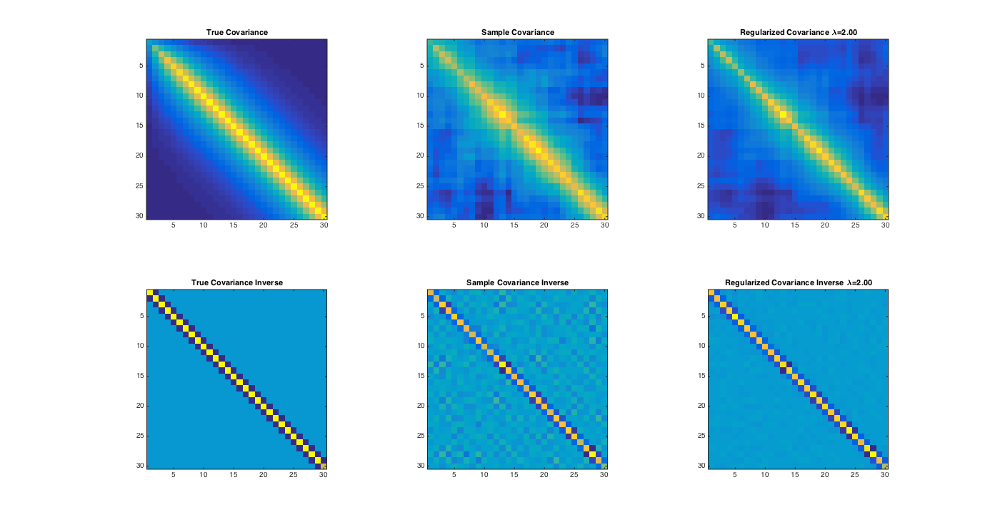

Contents
Generate the dataset for estimation
clear
n = 100;
p = 30;
sig2 = 0.01;
rho = 0.8;
[data,SIGINV, SIG_TRUE, T_TRUE, DINV_TRUE] = generateDataset(n,p,sig2,rho,'cutoff');
Start the Gibbs Sampler for estimation procedure
nSim = 5000;
nBurnIn = 1000;
lambda = 2;
phiChain = zeros(p,p,nSim);
sig2Chain = zeros(p,nSim);
tau2invChain = zeros(p,p,nSim);
yFirst = data(:,1);
sig2First = var(yFirst);
for k = 2:p
[y,X] = getSubProblem(k,data);
[ols_beta, ~, residual] = regress(y,X);
phiChain(k,1:k-1,1) = -ols_beta';
sig2Chain(k,1) = sumsqr(residual) / n;
tau2invChain(k,1:k-1,1) = 0.0001 * ones(1,k-1);
end
for k=2:p;
[y,X] = getSubProblem(k,data);
for round = 2:nSim;
oldSig2 = sig2Chain(k,round-1);
oldtau2Inv = tau2invChain(k,1:k-1,round-1);
newPhi = simulatePhi(y,X,oldSig2, oldtau2Inv, k);
newSig2= simulateSig2(y,X, newPhi, oldtau2Inv, n, k);
newTau2inv = simulateTau2Inv(newPhi, newSig2, k, lambda);
phiChain(k,1:k-1,round) = newPhi';
sig2Chain(k, round) = newSig2;
tau2invChain(k,1:k-1,round) = newTau2inv;
end
end
Compute the average of the results
T_EST = -mean(phiChain(:,:,nBurnIn:end),3) + eye(p);
S_EST = mean(sig2Chain(:,nBurnIn:end), 2);
S_EST(1) = sig2First;
DINV_EST = diag(1./S_EST);
COVINV_EST = T_EST' * DINV_EST * T_EST;
COV_EST = inv(COVINV_EST);
COMPUTE THE LOSS
[eLoss,qLoss] = getLoss(COV_EST, SIG_TRUE);
handle = figure(1);
subplot(2,3,1)
imagesc(SIG_TRUE);
title('True Covariance')
axis square
subplot(2,3,2)
imagesc(cov(data));
title('Sample Covariance')
axis square
subplot(2,3,3)
imagesc(COV_EST);
title(sprintf('Regularized Covariance \\lambda=%4.2f', lambda))
axis square
subplot(2,3,4)
imagesc(SIGINV);
title('True Covariance Inverse')
axis square
subplot(2,3,5)
imagesc(inv(cov(data)));
title('Sample Covariance Inverse')
axis square
subplot(2,3,6)
imagesc(COVINV_EST);
title(sprintf('Regularized Covariance Inverse \\lambda=%4.2f', lambda))
axis square
nameFile_EPS = sprintf('Figures/Result_lambda_%4.2f.eps', lambda);
nameFile_FIG = sprintf('Figures/Result_lambda_%4.2f.fig', lambda);
set(gcf,'PaperPositionMode','auto')
set(handle, 'Position', [100, 100, 1400, 900]);
print(handle, '-depsc', nameFile_EPS);
savefig(handle,nameFile_FIG);
